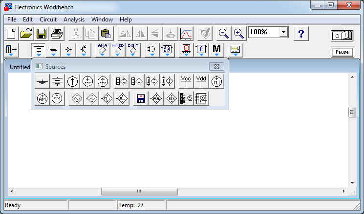
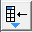
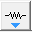

Electronics Workbench
Программа Electronics Workbench
Сейчас, в век компьютерных технологий, когда процесс моделирования занимает важнейшее место в процессе практически любого производственного цикла, широко используеться метод программной проработки, контроля и тестирования выходных данных при помощи различного программного обеспечени. Таким и является программа моделирования и разработки электрических схем Electronic Workbench.
Electronics Workbench - один из самых популярных в мире пакет в своем классе программных продуктов. Его пользователями являются инженеры-электронщики, преподаватели технических дисциплин, а также электронщики-любители во многих странах мира.
Программа Electronics Workbench предназначена для схематического представления и моделирования аналоговых, цифровых и аналогово-цифровых цепей. Пакет включает в себя средства редактирования, моделирования и виртуальные инструменты тестирования электрических схем, а также дополнительные средства анализа моделей. Имеет очень хорошо продуманный интерфейс. Огромная библиотека элементов, правда иностранного производства.
Программа Electronics Workbench имитирует реальное рабочее место исследователя — радиоэлектронную лабораторию, оборудованную измерительными приборами, работающими в реальном масштабе времени. С помощью программы можно создавать, моделировать и исследовать как простые, так и сложные аналоговые и цифровые радиоэлектронные устройства.
Главное окно программы показано на рис. 1.

Рис. 1 - Окно программы Electronics Workbench
В верхней части окна программы находится главное меню программы.
Окно схемы занимает центральную основную область окна программы. В этом окне, используя компоненты и соединительные провода, создают и редактируют электрические цепи.
Панель инструментов (панель кнопок) располагается выше окна схемы. Верхняя линейка кнопок дублирует команды меню. Вторая линейка кнопок, располагающаяся непосредственно над окном схемы, используется для выбора компонент схемы и измерительных приборов, подключаемых к цепи. При щелчке на кнопке второй линейки отображается окно выбора элементов. На рис. 1 показано окно выбора источников (Sources). Назначение кнопок приведена в таблице 1.
Таблица 1.
| Кнопка | Название | Описание |
|---|---|---|
 |
Favorites | Избранное |
| Sources | Источники сигналов | |
 |
Basic | Пассивные компоненты и коммутационные устройства |
| Diodes | Диоды | |
| Transistors | Транзисторы | |
| Analog IСs | Аналоговые микросхемы | |
| Mixed IСs | Микросхемы смешанного типа | |
| Digital IСs | Цифровые микросхемы | |
| Logic Gates | Логические элементы | |
| Digital | Цифровые устройства | |
| Indicators | Индикаторные устройства | |
| Controls | Аналоговые вычислительные устройства | |
| Miscellaneous | Компоненты смешанного типа | |
| Instruments | Контрольно-измерительные приборы |
В правом верхнем углу окна программы расположены кнопка активизации и остановки расчета схемы Activate simulation, a так же кнопка Pause (Пауза) . Кнопка Activate simulation изображена в виде выключателя с цифрами 0 и 1. При щелчке на цифре 1 происходит активация схемы и выполняется расчет процессов, протекающих в исследуемом устройстве.
Главное меню программы включает в себя:
- File - команды работы с файлами.
Revent to Saved… - стирание всех изменений, внесенных в текущем сеансе редактирования и восстановление схемы в первоначальном виде; - Edit - команды редактирования
Copy as Bitmap – выделение, указанная область помещается в буфер обмена; - Circuit - для подготовки схем и задания параметров моделирования;
- Analysis – задание параметров моделирования
- Window:
Arrange – исправление искажения изображений компонентов, соединительных проводников и перезапись экрана,
Circuit – вывод схемы на передний план,
Description - вывод на передний план описания схемы или окна-ярлыка; - Help - стандартный для Windows. После нажатия на элемент схемы на клавишу F1 – открывается окно Справки с описанием данного элемента.
Программа Electronics Workbench является сложным продуктом, с большим числом устанавливаемых параметров и режимов работы. Большинство параметров и опций программы Electronics Workbench установлены по умолчанию так, что обеспечивается возможность исследования большинства типовых электронных устройств.
Работа с программой Electronics Workbench включает три основных этапа:
- Создание схемы.
- Выбор и подключение измерительных приборов.
- Активация схемы .